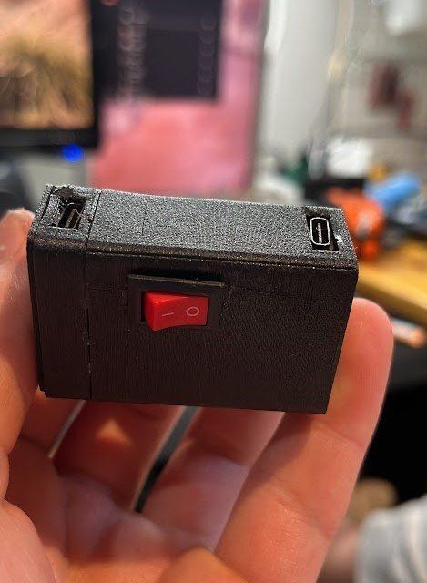
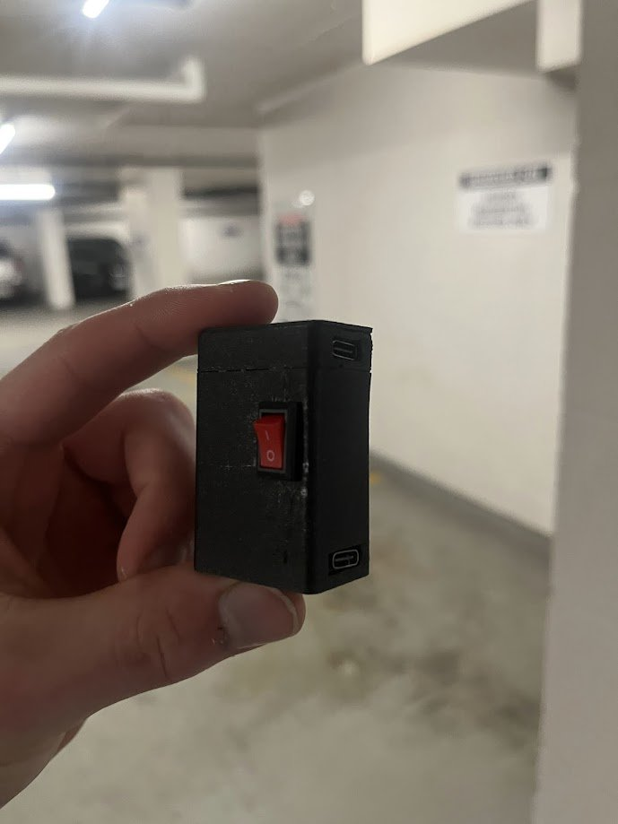
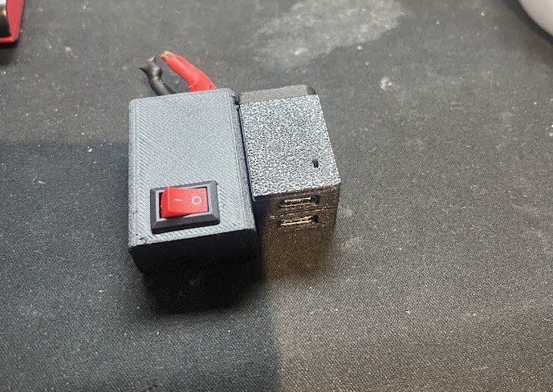
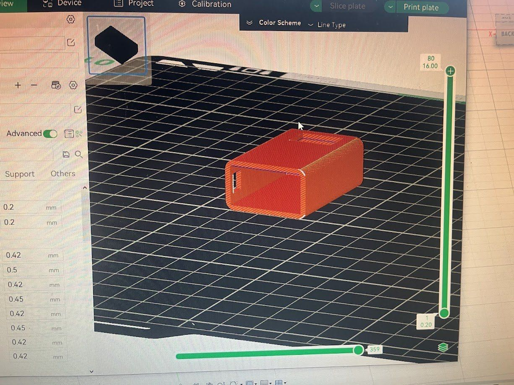
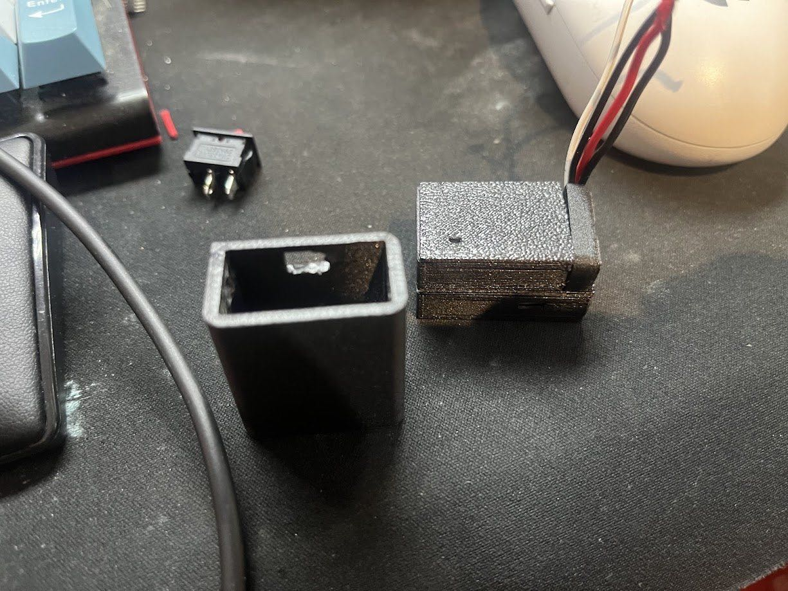
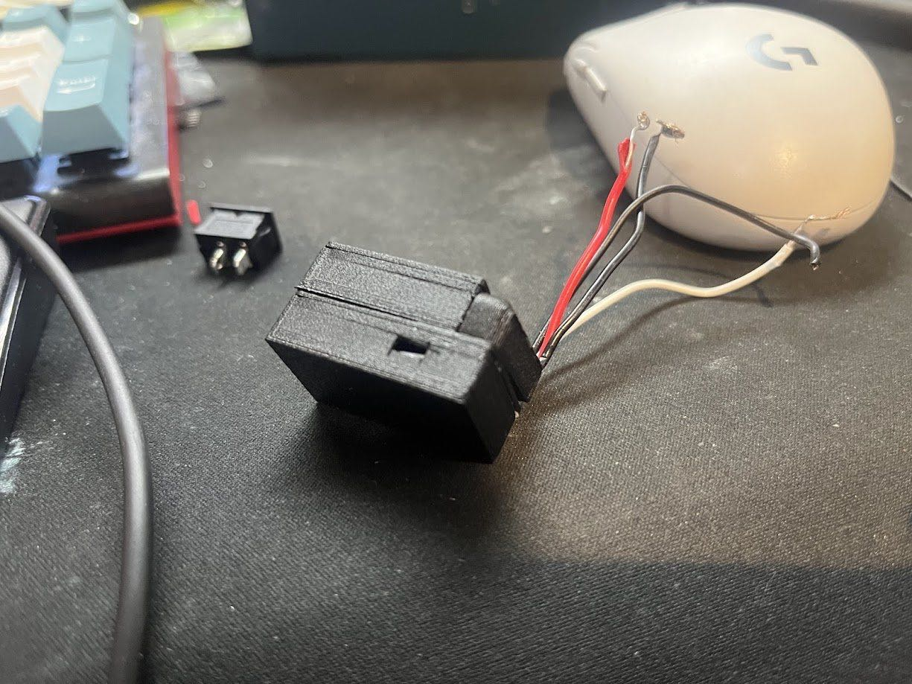

Overview
This project was built for a friend who travels alone for work, and who has a fear of being taken, having her phone thrown away, and having no way to call for help. Location sharing doesn't help once the phone is gone, and Apple Watches and AirTags can't send alerts after being separated from a phone.
My fix for this situation was to have the phone itself send an alert, in the event it was removed from the user, with the alert timing, urgency, and overall parameters being user-customizable, based on the theoretical situation which the user is worried about. To do this, the device hosts a small Wi-Fi network that the wearer's iPhone stays connected to. An iOS Shortcuts automation watches that connection, and if the phone and device are pulled apart, it sends a custom message, such as the wearer's current location, to chosen contacts. The phone can keep using mobile data while connected to this network, so internet and GPS aren't affected.
Bluetooth was tried first, but drew too much power, wasn't easily visible, and didn't maintain a strong enough connection to the iPhone. The Wi-Fi version idles in a low-power state once connected, giving 18+ hours from a 600 mAh cell, recycled from a vape.
Hardware
Gallery






Skills and technologies
Source code, wiring diagrams, 3D models and full documentation are in the GitHub repository.